Assignment 1
This assignment was done in collaboration with Casey Currey-Wilson.The goal of this assignment is to create a program that displays a spherical shape shaded using the Phong Illumination Model for point and directional lights. The program can be customized (colour, light directions, etc.) through the command line. Below are some basic examples demonstrating these options.
| 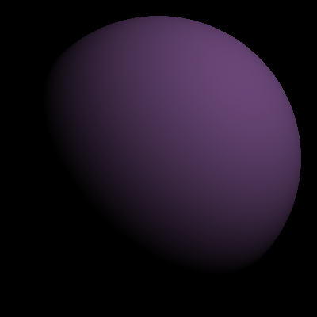 | 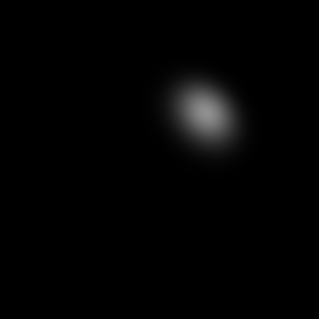 |
|
Diffuse only shading from a single point light source. -pl 400 400 400 0.7 0.7 0.7 -kd 0.588 0.392 0.666
|
Specular only shading from a single point light source. -pl 400 400 400 0.7 0.7 0.7 -ks 0.8 0.8 0.8 -sp 13
|
| 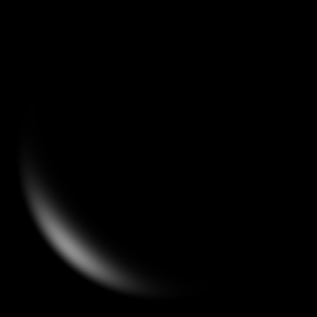 | 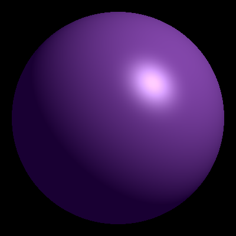 |
|
Specular only shading from a single directional light source. -dl 400 400 400 0.7 0.7 0.7 -ks 0.8 0.8 0.8 -sp 13
|
Combined specular and diffuse shading from a single light source. -pl 400 400 400 0.7 0.7 0.7 -kd 0.588 0.392 0.666 -ka 0.1 0 0.2 -ks 0.8 0.8 0.8 -sp 13
|
| 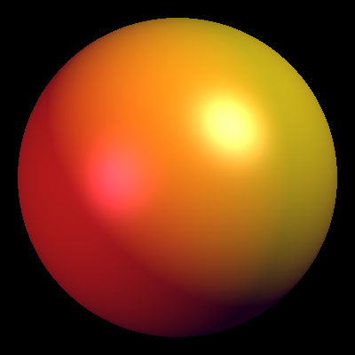 | 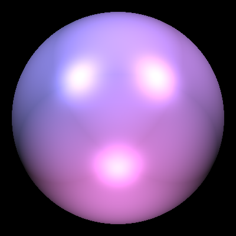 |
|
Two light sources: point light and directional light. -pl 400 400 400 0.7 0.7 0.7 -dl 1 0 -1 0.6 0.1 0.4 -kd 1 1 0 -ka 0.1 0 0.1 -ks 0.8 0.8 0.8 -sp 13
|
Three point lights. -ka 0.05 0.05 0.05 -kd 1 1 1 -ks 1 1 1 -sp 64 -pl 2 2 2 0.66 0.46 0.82 -pl -2 2 2 0.48 0.46 0.82 -pl 0 -2 2 0.82 0.46 0.8
|
When the window is resized, the circular shape still occupies the majority (or more specifically, 90% of the window's smaller dimension) of the display, which is demonstrated below.
Extra Credit
For extra credit, we implemented several further customizations that can also be accessed through the command line.Toon Shading: -tn v
Creates silhouette that acts as a border. v is the number of shades there will be in the render. Though, since the calculation for shades is separate for RBG, the image will actually have v^3 different colours.
| 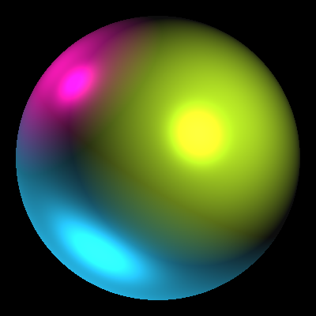 | 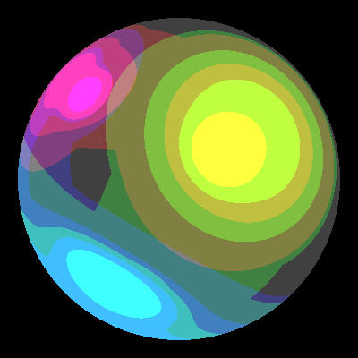 |
|
Original sphere with point lights and a directional light. -ka 0.05 0.05 0.05 -kd 1 1 1 -ks 1 1 1 -sp 10 -pl 1 0.6 2 0.7 0.9 0.1 -pl -1 0.9 0.5 0.9 0.05 0.65 -dl 0.5 0.8 0.2 0.1 0.7 0.9
|
With toon option at v = 4. -ka 0.05 0.05 0.05 -kd 1 1 1 -ks 1 1 1 -sp 10 -pl 1 0.6 2 0.7 0.9 0.1 -pl -1 0.9 0.5 0.9 0.05 0.65 -dl 0.5 0.8 0.2 0.1 0.7 0.9 -tn 4
|
| 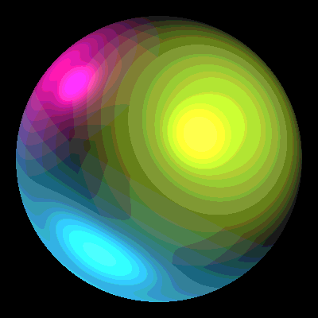 | 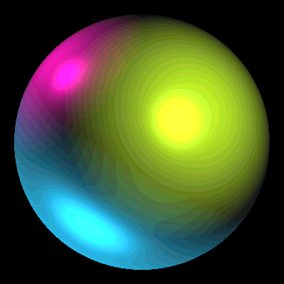 |
|
With toon option at v = 10. -ka 0.05 0.05 0.05 -kd 1 1 1 -ks 1 1 1 -sp 10 -pl 1 0.6 2 0.7 0.9 0.1 -pl -1 0.9 0.5 0.9 0.05 0.65 -dl 0.5 0.8 0.2 0.1 0.7 0.9 -tn 10
|
With toon option at v = 20. -ka 0.05 0.05 0.05 -kd 1 1 1 -ks 1 1 1 -sp 10 -pl 1 0.6 2 0.7 0.9 0.1 -pl -1 0.9 0.5 0.9 0.05 0.65 -dl 0.5 0.8 0.2 0.1 0.7 0.9 -tn 20
|
Multiple Spheres: -ts
Creates two identically shaded spheres in the same window.
| 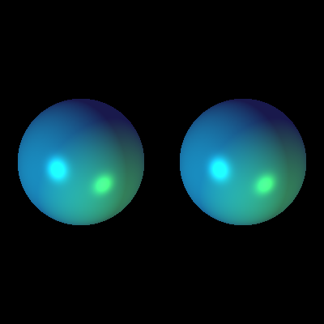 |

|
|
-ka 0.1 0.1 0.3 -kd 0.5 0.5 0.5 -ks 0.7 0.7 0.7 -sp 20 -dl 2 0.6 -2 0 0.9 0.9 -pl 3 -3 3 0.2 0.8 0.1 -ts
|
-ka 0.2 0.2 0.2 -kd 0.5 0.5 0.5 -ks 0.7 0.7 0.7 -sp 16 -pl 2 2 2 1 0.5 0.45 -pl -2 -2 2 0.45 0.9 1 -ts
|
Sources/References used:
Example code from CS 184 TAs
Eigen (linear algebra library)
Sun & Black Cat's Non-photorealistic Rendering (Cel shading) - Pseudocode "shadeIntensity = ceil(intensity * numShades)/numShades".